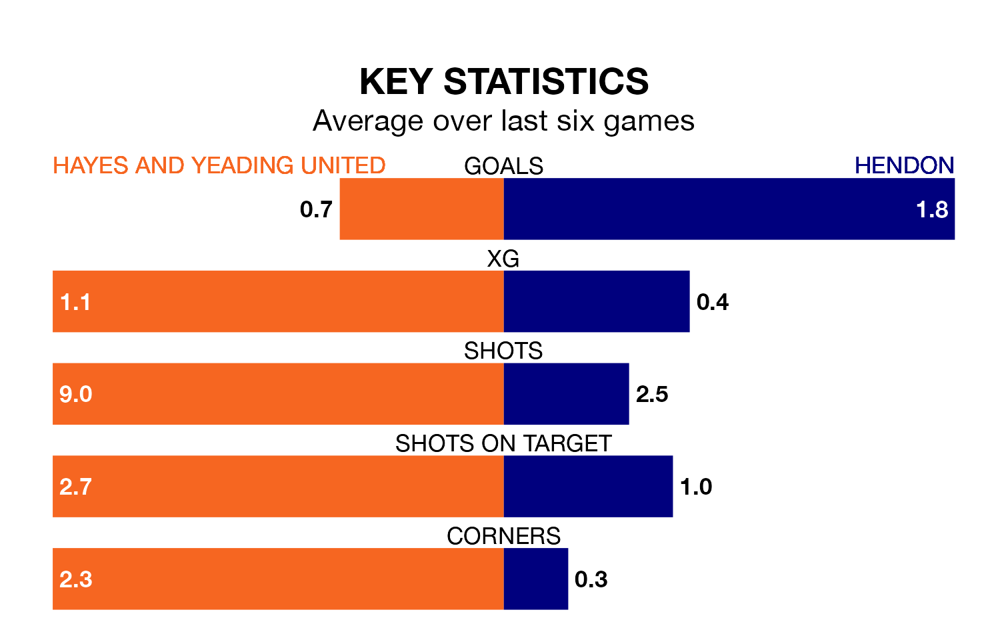

Hayes and Yeading United are on a terrible run ahead of hosting Hendon at the SKYex Community Stadium on Monday, with just two points collected from their last six games.
Hayes & Yeading have picked up two draws and four losses in their last six Southern League Premier – South games, and face a Hendon side whose last six games have brought two wins and one draw.
In the last 10 years, Hayes & Yeading and Hendon have played each other on seven occasions. Hayes & Yeading won five of them, Hendon one, and they drew once.
On average, Hayes & Yeading scored 2.9 goals and Hendon 1.9 in those matches.
Their last meeting was on January 1, when Hendon won 4-3 at home.
With 52 goals in 35 games so far this season, Hayes & Yeading are scoring at below the league average rate with 1.5 goals per game. But they are conceding fewer than average too, letting in 57 goals at a rate of 1.6 per game.
Hendon, meanwhile, are above average scorers, with 1.8 goals per game, compared to a league average of 1.7. They have conceded 1.7 goals per game.
United are 18th in the table after 35 games, of which they have won nine and drawn 11, earning 38 points.
The visitors are nine places ahead of the home team in ninth, with 13 wins and 11 draws putting them on 50 points.
Hayes & Yeading's last match was on Friday, a 1-0 loss against Chesham United.
Hendon lost 5-4 against Beaconsfield Town last time out, on Saturday.
Updated: 10:31 (UTC), 31/03/24